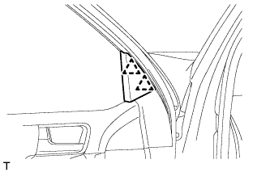
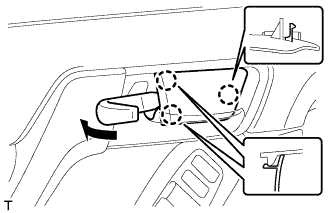
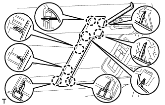
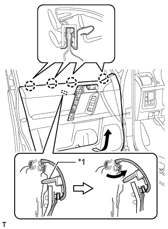
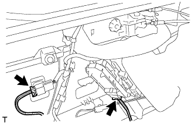
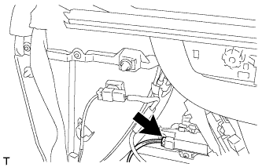
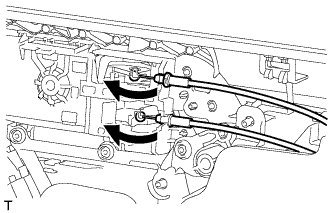
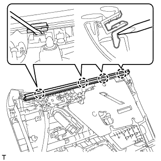
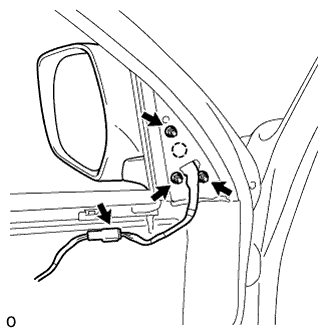

НАРУЖНОЕ ЗЕРКАЛО ЗАДНЕГО ВИДА > СНЯТИЕ |
| 1. СНИМИТЕ ОБЛИЦОВКУ КРОНШТЕЙНА НИЖНЕЙ РАМЫ ЛЕВОЙ ПЕРЕДНЕЙ ДВЕРИ |
|  |
Отсоедините 2 фиксатора и снимите облицовку кронштейна нижней рамы левой передней двери.
| 2. СНИМИТЕ ДЕРЖАТЕЛЬ ВНУТРЕННЕЙ РУЧКИ ЛЕВОЙ ДВЕРИ № 2 |
|  |
С помощью съемника молдингов освободите 3 захвата и снимите оправу внутренней ручки, как показано на рисунке.
| 3. СНИМИТЕ ЛЕВУЮ НАКЛАДКУ ВЕРХНЕГО ПОРУЧНЯ |
|  |
С помощью съемника молдингов А освободите 8 захватов и снимите крышку верхнего поручня.
| 4. СНИМИТЕ ПАНЕЛЬ ОБЛИЦОВКИ ЛЕВОЙ ПЕРЕДНЕЙ ДВЕРИ В СБОРЕ |
 |
Выверните 3 винта.
Снимите 12 фиксаторов.
|  |
Вытяните панель облицовки передней двери в сборе в направлении, указанном стрелкой на рисунке.
| *1 | Базовый выступ |
Поднимите панель облицовки передней двери в сборе, чтобы освободить 4 захвата, и снимите панель облицовки передней двери в сборе вместе с внутренним уплотнителем стекла левой передней двери.
|  |
Отсоедините 2 разъема.
Для моделей с запоминающими устройствами сидений:
|  |
Отсоедините разъемы.
|  |
Отсоедините трос дистанционного управления замком передней двери в сборе и внутренний трос замка передней двери в сборе.
| 5. СНИМИТЕ ВНУТРЕННИЙ УПЛОТНИТЕЛЬ СТЕКЛА ЛЕВОЙ ПЕРЕДНЕЙ ДВЕРИ |
|  |
С помощью отвертки освободите 4 захвата и снимите внутренний уплотнитель стекла передней двери с панели облицовки передней двери в сборе, как показано на рисунке.
| 6. СНИМИТЕ ЛЕВОЕ НАРУЖНОЕ ЗЕРКАЛО ЗАДНЕГО ВИДА В СБОРЕ |
|  |
Отсоедините разъем.
Отверните 3 гайки.
Освободите захват и снимите наружное зеркало заднего вида.